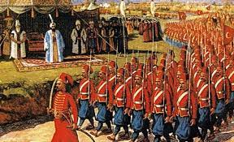
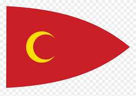

What made are empire so great?
The ottoman empire greatness was in its territory Control of some of the world’s most busy trade routes made them swimming in riches, while its powerfull military system led to military might
Why did it end?
The ottoman empire ended because of its lack of technology in ww2 when everyone else had tanks all the ottaman had was bows and spears.
Cool song i made but will not sing Ussr anthem(ottoman cover)
United forever in friendship and labour,
Our mighty republics will ever endure.
The Great otoman empire will live through the ages.
The diversity of the Janissaries their Quaran secure.
Long live our otoman motherland,
Built by the Suleiman's mighty hand.
Long live our muslims, monotheistic and free.
Strong in our forces tried by fire.
Long may our crimson flag inspire,
Shining in glory for all men to see.
Through days dark and stormy where Caliphs lead us
Our EYES saw the BRIGHT sun of freedom ABOVE
And Sultan our leader with faith in the istanbul
Went into the war but we still lost
Long live our otoman motherland,
Built by the people's mighty hand.
Long live our people, united and free.
Strong in our friendship tried by fire.
Long may our crimson flag inspire,
Shining in glory for all men to see.
We fought for the future, destroyed by the invaders,
And brought to our homeland the agreement of shame.
Our story will live in the memory of nations
And all generations will remember are name.
Long live our otoman motherland,
Built by the allahs mighty hand.
Long live our people, united and free.
Strong in our sultans tried by fire.
Long may our crimson flag inspire,
Shining in glory for all men to see.
Why is the ottoman empire important to south east asia
The ottoman empire is important to south east asia because of the economic bonds.Especially the spice trade, and trade routes which they taxed made them very rich.
Vocab words(all in the song)
Suleiman I “The Magnificent” - was the tenth and longest-reigning Sultan of the Ottoman Empire
Janissaries - A Janissary was a member of the elite infantry units that formed the Ottoman
Caliph - The chief Muslim civil and religious ruler
Sultan Mehmed V - The last sultan.
Diversity - Involving people from a range of different social and ethnic backgrounds.
monotheism - The belief that there is only one God.
Quran - holy book of islam.
Muslims - people who follow or practice Islam.
Allah - Arabic word for God.
Sultan - political or governmental power.